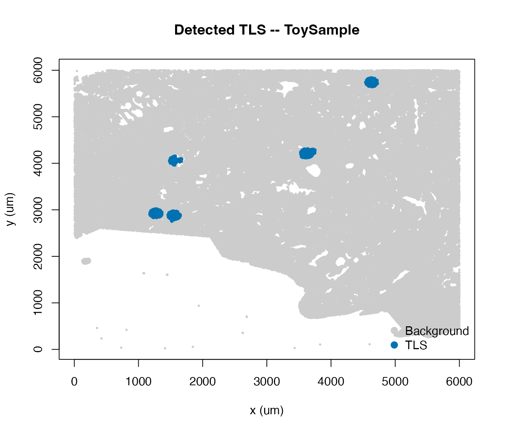
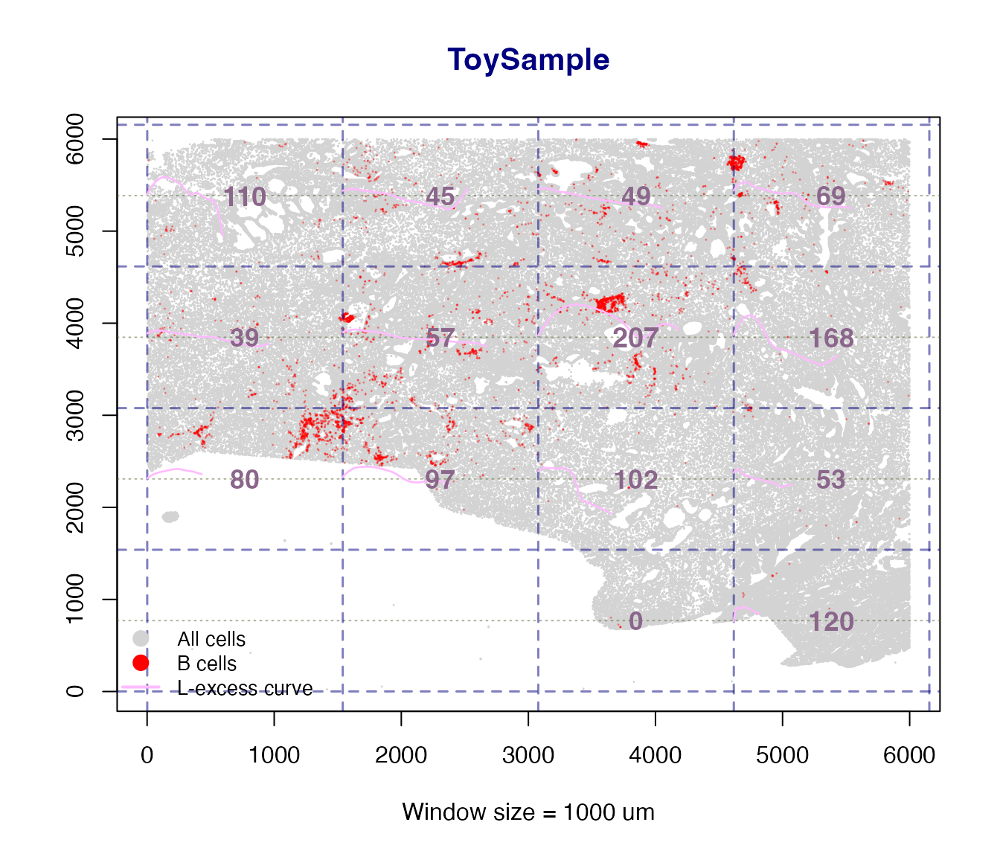
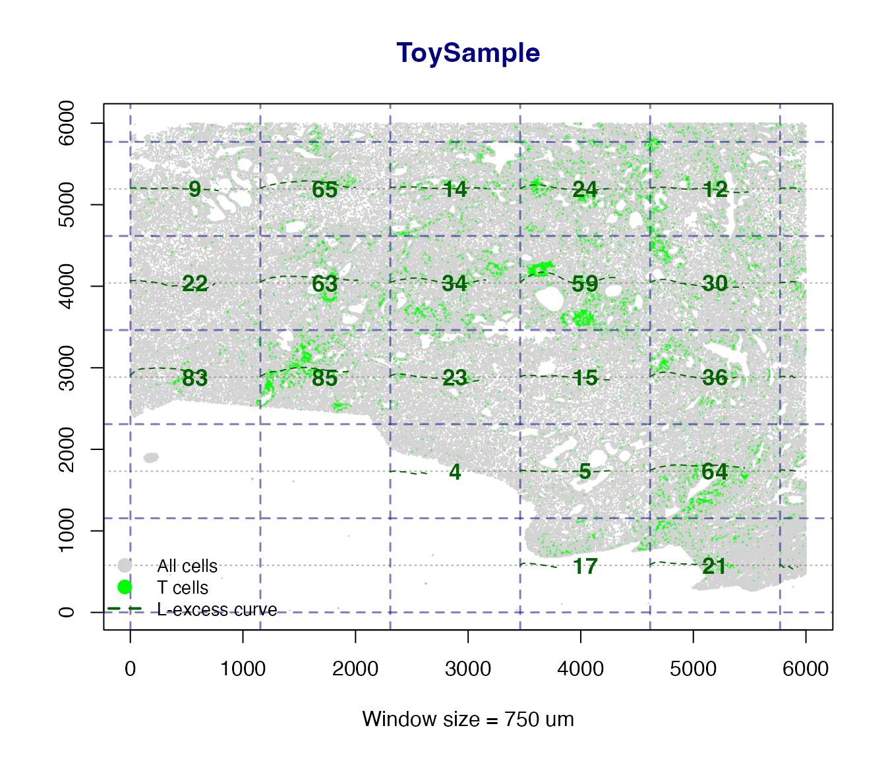
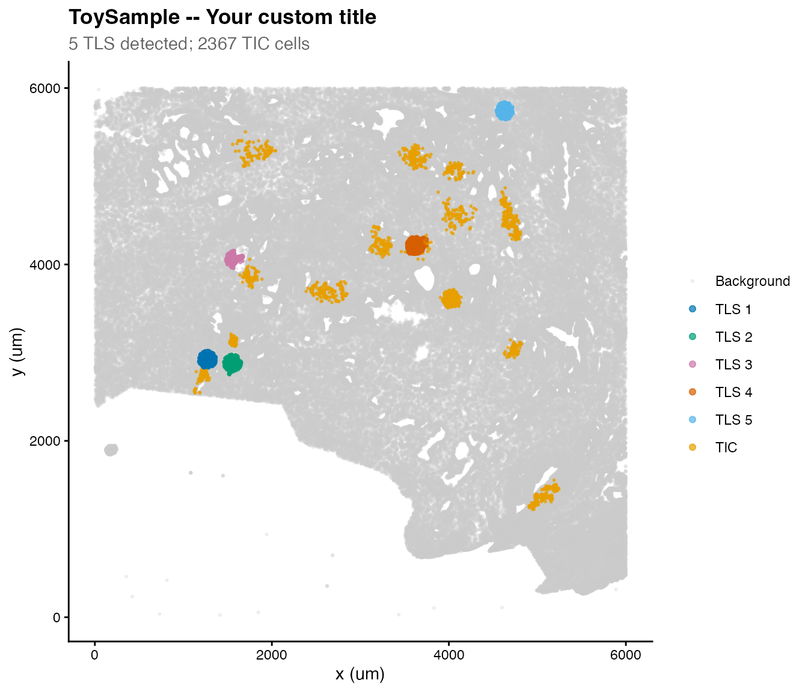

tlsR Workflow: From Quntified Cell Feature Table of the Imaging Data to TLS Characterisation
Ali Amiryousefi
2026-04-23
Source:vignettes/tlsR-workflow.Rmd
tlsR-workflow.RmdIntroduction
Tertiary lymphoid structures (TLS) are ectopic lymphoid organs that form in non-lymphoid tissues – most notably in tumors – and are associated with improved patient outcomes and immunotherapy response. tlsR provides a fast, reproducible pipeline for detecting TLS and characterizing their spatial organisation in multiplexed tissue imaging data (e.g. mIHC, CODEX, IMC).
The core pipeline is:
Raw ldata list
|
v
detect_TLS() <- KNN-based B+T co-localisation
|
+--> scan_clustering() <- Sliding-window Ripley's L clustering map
|
+--> calc_icat() <- ICAT spatial-spread score per TLS
|
+--> detect_tic() <- T-cell clusters outside TLS
|
+--> summarize_TLS() <- Tidy summary table
|
+--> plot_TLS() <- Publication-ready spatial plotData Format
tlsR expects a named list of data
frames (ldata), one element per tissue sample.
Each data frame must contain at minimum:
| Column | Type | Description |
|---|---|---|
x |
numeric | X coordinate in microns |
y |
numeric | Y coordinate in microns |
phenotype |
character | Cell label; must contain "B cell" /
"T cell"
|
Additional columns (e.g. cell area, marker intensities) are silently ignored.
library(tlsR)
data(toy_ldata)
# Structure of the built-in example dataset
str(toy_ldata)
#> List of 1
#> $ ToySample:'data.frame': 322951 obs. of 4 variables:
#> ..$ x : int [1:322951] 423 355 731 814 1415 1847 2623 2626 2625 3433 ...
#> ..$ y : int [1:322951] 234 460 38 420 24 54 353 353 357 30 ...
#> ..$ cflag : int [1:322951] 0 0 0 0 0 0 0 0 0 0 ...
#> ..$ phenotype: chr [1:322951] "Others" "Others" "Others" "Others" ...
table(toy_ldata[["ToySample"]]$phenotype)
#>
#> B cells Endothelial cells Myeloid cells Others
#> 4446 15843 35189 150350
#> Stromal cells T cells
#> 106412 10711Step 1 – Detect TLS with detect_TLS()
detect_TLS() identifies B-cell-rich regions with
sufficient T-cell co-localisation using a KNN density approach.
data(toy_ldata)
ldata <- detect_TLS(
LSP = "ToySample",
k = 10, # neighbours for density estimation
bcell_density_threshold = 17, # min avg 1/k-distance (um)
min_B_cells = 100, # min B cells per candidate TLS
min_T_cells_nearby = 5, # min T cells within max_distance_T
max_distance_T = 50, # search radius (um)
expand_distance = 100, # expanding radius
ldata = toy_ldata
)
#> Detected TLS: 5
table(ldata[["ToySample"]]$tls_id_knn)
#>
#> 0 1 2 3 4 5
#> 317892 568 533 414 2250 1294The new column tls_id_knn is 0 for non-TLS
cells and a positive integer for cells assigned to TLS 1, 2, 3, … .
Quick base-R check plot
df <- ldata[["ToySample"]]
plot(df$x[df$tls_id_knn == 0],
df$y[df$tls_id_knn == 0],
col = "grey80", pch = 19, cex = 0.3,
xlab = "x (um)", ylab = "y (um)",
main = "Detected TLS -- ToySample")
points(df$x[df$tls_id_knn > 0],
df$y[df$tls_id_knn > 0],
col = "#0072B2", pch = 19, cex = 0.4)
legend("bottomright",
legend = c("Background", "TLS"),
col = c("grey80", "#0072B2"),
pch = 19, pt.cex = 1.2, bty = "n")
Step 2 – Local Ripley’s L Map with
scan_clustering()
scan_clustering() slides a square window across the
tissue and computes the K-integral clustering index in
each window – the mean positive excess of the observed Ripley’s L over
the theoretical CSR value.
When plot = TRUE (the default) a spatial map is produced
showing:
- All cells as small light-grey points.
- Phenotype cells coloured green (T cells) or red (B cells).
- A navy dashed grid marking window boundaries.
- A LOESS-smoothed L-excess curve overlaid inside each qualifying window.
- A bold numeric clustering-intensity (CI) label centred in each window.
- A legend identifying all point and curve colours.
Single-phenotype map
# eval=FALSE because this can take ~10--30 s on real data
L_B <- scan_clustering(
ws = 1000, # window side (um)
sample = "ToySample",
phenotype = "B cells",
plot = TRUE,
creep = 1L,
min_cells = 10L,
min_phen_cells = 5L,
label_cex = 1.1, # increase if CI labels look small
ldata = ldata
)
#> scan_clustering [B cells]: 14 window(s) analysed in 'ToySample'.
cat("B-cell windows analysed:", length(L_B$B), "\n")
#> B-cell windows analysed: 14
L_T <- scan_clustering(
ws = 750,
sample = "ToySample",
phenotype = "T cells",
plot = TRUE,
ldata = ldata
)
#> scan_clustering [T cells]: 31 window(s) analysed in 'ToySample'.
cat("T-cell windows analysed:", length(L_T$T), "\n")
#> T-cell windows analysed: 31Side-by-side B and T cell panels
When phenotype = "Both" two panels are drawn side by
side – one for B cells and one for T cells – with a shared super-title,
making it easy to compare clustering intensity across compartments.
L_both <- scan_clustering(
ws = 3000,
sample = "ToySample",
phenotype = "Both",
plot = TRUE,
ldata = ldata
)
cat("B windows:", length(L_both$B), " | T windows:", length(L_both$T), "\n")The returned list has named elements $B and
$T, each containing Lest objects for the
qualifying windows of that phenotype. Individual L curves can be
inspected or plotted directly from these objects.
Step 3 – ICAT Score with calc_icat()
The ICAT (Immune Cell Arrangement Trace) index quantifies the spatial spread and linear organisation of cells within a TLS. A higher value indicates a more spatially extended, structured cluster.
How it works
calc_icat() applies FastICA to the centred (x, y)
coordinates of TLS cells, reconstructs the data as
,
and computes the normalised trace-standard-deviation:
where
are the marginal variances of
.
This formulation is always non-negative – it reflects
average spatial spread per cell in microns, rather than the signed trace
of the raw mixing matrix which can be negative due to ICA sign
ambiguity.
n_tls <- max(ldata[["ToySample"]]$tls_id_knn, na.rm = TRUE)
if (n_tls >= 1L) {
icat_scores <- vapply(
seq_len(n_tls),
function(id) calc_icat("ToySample", tlsID = id, ldata = ldata),
numeric(1L)
)
names(icat_scores) <- paste0("TLS", seq_len(n_tls))
print(icat_scores)
}
#> TLS1 TLS2 TLS3 TLS4 TLS5
#> 15.970299 17.608423 21.741182 4.301720 6.282444calc_icat() returns NA (with a message) if
a TLS has too few cells or if FastICA fails to converge – no errors are
thrown.
Step 4 – Detect T-cell Clusters with detect_tic()
T-cell clusters (TIC) that lie outside TLS are identified
with HDBSCAN. The min_pts and min_cluster_size
arguments let you control sensitivity.
ldata <- detect_tic(
sample = "ToySample",
min_pts = 20, # HDBSCAN minPts
min_cluster_size = 100, # drop clusters smaller than this
ldata = ldata
)
#> detect_tic: 14 T-cell cluster(s) detected in 'ToySample'.
table(
ldata[["ToySample"]]$tcell_cluster_hdbscan[
ldata[["ToySample"]]$tcell_cluster_hdbscan != 0
],
useNA = "ifany"
)
#>
#> 1 2 3 4 5 6 7 8 9 10 11
#> 117 117 102 129 253 209 173 117 189 141 105
#> 12 13 14 <NA>
#> 386 110 219 312966Step 5 – Summary Table with summarize_TLS()
summarize_TLS() produces a tidy one-row-per-sample
summary – convenient for downstream statistical analysis.
sumtbl <- summarize_TLS(ldata, calc_icat_scores = FALSE)
print(sumtbl)
#> sample n_TLS total_cells TLS_cells TLS_fraction mean_TLS_size n_TIC
#> 1 ToySample 5 322951 5059 0.01566492 1011.8 14With calc_icat_scores = TRUE a list-column
icat_scores is appended containing named numeric vectors of
per-TLS ICAT values (always non-negative).
Step 6 – Visualise with plot_TLS()
plot_TLS() produces a ggplot2 scatter plot with TLS and
TIC coloured distinctly using a colourblind-friendly palette.
Rendering improvements
Two aesthetics have been tuned for clarity:
-
Background cells are drawn with
bg_alpha = 0.25(more transparent than before), so the foreground TLS and TIC structure is immediately visible. -
TIC cells are drawn at
point_size * tic_size_mult(default multiplier1.8x), making them slightly larger than TLS cells without dominating the plot.
Both parameters are fully exposed as function arguments so you can fine-tune them for your data density.
p <- plot_TLS(
sample = "ToySample",
ldata = ldata,
show_tic = TRUE,
point_size = 0.5,
alpha = 0.7, # TLS / TIC cells
bg_alpha = 0.25, # background cells (more transparent)
tic_size_mult = 0.8 # TIC cells drawn 1.8x larger
)The returned ggplot object can be further customised
with standard ggplot2 functions:

Multi-Sample Workflow
tlsR is designed to scale naturally to many samples.
Simply pass your full ldata list and iterate:
samples <- names(ldata)
ldata <- Reduce(function(ld, s) detect_TLS(s, ldata = ld), samples, ldata)
ldata <- Reduce(function(ld, s) detect_tic(s, ldata = ld), samples, ldata)
summary_all <- summarize_TLS(ldata)
print(summary_all)For scan_clustering() across many samples:
# Generate one spatial map per sample (side-by-side B and T panels)
for (s in names(ldata)) {
scan_clustering(
ws = 500,
sample = s,
phenotype = "Both", # two-panel plot: B cells | T cells
plot = TRUE,
label_cex = 1.2, # slightly larger CI labels for presentation
ldata = ldata
)
}Session Info
sessionInfo()
#> R version 4.5.2 (2025-10-31)
#> Platform: aarch64-apple-darwin20
#> Running under: macOS Tahoe 26.3.1
#>
#> Matrix products: default
#> BLAS: /System/Library/Frameworks/Accelerate.framework/Versions/A/Frameworks/vecLib.framework/Versions/A/libBLAS.dylib
#> LAPACK: /Library/Frameworks/R.framework/Versions/4.5-arm64/Resources/lib/libRlapack.dylib; LAPACK version 3.12.1
#>
#> locale:
#> [1] en_US.UTF-8/en_US.UTF-8/en_US.UTF-8/C/en_US.UTF-8/en_US.UTF-8
#>
#> time zone: America/New_York
#> tzcode source: internal
#>
#> attached base packages:
#> [1] stats graphics grDevices utils datasets methods base
#>
#> other attached packages:
#> [1] ggplot2_4.0.2 tlsR_0.3.0
#>
#> loaded via a namespace (and not attached):
#> [1] sass_0.4.10 generics_0.1.4 spatstat.explore_3.8-0
#> [4] tensor_1.5.1 spatstat.data_3.1-9 lattice_0.22-9
#> [7] digest_0.6.39 magrittr_2.0.5 spatstat.utils_3.2-2
#> [10] evaluate_1.0.5 grid_4.5.2 RColorBrewer_1.1-3
#> [13] fastmap_1.2.0 jsonlite_2.0.0 Matrix_1.7-5
#> [16] spatstat.sparse_3.1-0 scales_1.4.0 textshaping_1.0.5
#> [19] jquerylib_0.1.4 abind_1.4-8 cli_3.6.6
#> [22] rlang_1.2.0 polyclip_1.10-7 fastICA_1.2-7
#> [25] withr_3.0.2 cachem_1.1.0 yaml_2.3.12
#> [28] otel_0.2.0 spatstat.univar_3.1-7 FNN_1.1.4.1
#> [31] tools_4.5.2 deldir_2.0-4 dplyr_1.2.1
#> [34] spatstat.geom_3.7-3 vctrs_0.7.3 R6_2.6.1
#> [37] lifecycle_1.0.5 fs_2.0.1 htmlwidgets_1.6.4
#> [40] dbscan_1.2.4 ragg_1.5.2 pkgconfig_2.0.3
#> [43] desc_1.4.3 pkgdown_2.2.0 bslib_0.10.0
#> [46] pillar_1.11.1 gtable_0.3.6 glue_1.8.0
#> [49] Rcpp_1.1.1-1 systemfonts_1.3.2 xfun_0.57
#> [52] tibble_3.3.1 tidyselect_1.2.1 rstudioapi_0.18.0
#> [55] knitr_1.51 dichromat_2.0-0.1 goftest_1.2-3
#> [58] farver_2.1.2 nlme_3.1-169 spatstat.random_3.4-5
#> [61] htmltools_0.5.9 labeling_0.4.3 rmarkdown_2.31
#> [64] compiler_4.5.2 S7_0.2.1-1